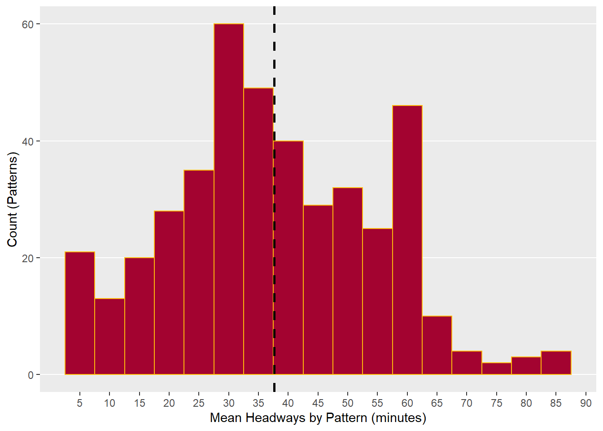

library(gtfstools)
library(dplyr)
library(ggplot2)Calculating Headways: December 2017
On this page, we’ll calculate weekday headways for buses operating in Baltimore circa December 2017. First we’ll use GTFStools to read in the GTFS.
gtfs <- read_gtfs("gtfs 3_17.zip")
class(gtfs)[1] "dt_gtfs" "gtfs" "list" Now we have a large dt_gtfs in our environment. There are a bunch of tables in this datatable, containing rows upon rows of information about transit service in December 2017. One of the tables is “routes” which contains information about route names and types.
unique(gtfs$routes$route_type)[1] 3 1 0 2A route_type of “3” in a GTFS is a bus. Since we are only interested in buses, we can filter the entire dt_gtfs to just information about bus routes.
gtfs <- filter_by_route_type(gtfs, route_type = 3) ##filter down gtfs to just bus routes
unique(gtfs$routes$route_type) [1] 3Agencies assign their own route_ids and these change with each new GTFS published.
head(gtfs$routes$route_id)[1] "9331" "9332" "9333" "9334" "9335" "9336"I identified the route_ids of MTA’s commuter and express buses, and will now filter the gtfs again, removing those routes.
route_ids <- as.character(c(9972:10024, "10040"))
gtfs_fil <- filter_by_route_id(gtfs, route_id = route_ids, keep = FALSE) ##seeyaIn GTFS, trips are basically the most fine-grained keys in the data. A trip in GTFS corresponds to one bus travelling from its origin to its destination following a specific sequence of stops, in a single direction (inbound or outbound). These are aggregated up to routes, which are sets of trips that serve roughly the same stops in the same sequence, inbound or outbound – but origins, destinations, and stops served may vary. Routes may contain trips that have particular services depending on the time of day.
nrow(gtfs_fil$trips)[1] 11981nrow(gtfs_fil$routes)[1] 106An intermediate unit can be assigned by GTFStools: a pattern. Patterns group together trips that follow the same sequence of stops. There are far fewer patterns than there are trips, but more patterns than routes.
patterns <- get_stop_times_patterns(gtfs_fil)
count(patterns, pattern_id)# A tibble: 626 × 2
pattern_id n
<int> <int>
1 1 2
2 2 3
3 3 9
4 4 64
5 5 4
6 6 2
7 7 2
8 8 1
9 9 13
10 10 63
# … with 616 more rowsEach pattern_id is associated with a different number of trips. On this first page alone, we have patterns that are associated with a single trip, or patterns that are associated with dozens of trips.
GTFStools allows us to convert all arrival and departure times from HH:MM:SS format to seconds after midnight. This is going to make calculating headways a bit easier.
gtfs_fil <- convert_time_to_seconds(gtfs_fil)
head(gtfs_fil$stop_times$arrival_time)[1] "15:05:00" "15:20:00" "15:20:54" "15:22:00" "15:22:48" "15:23:15"head(gtfs_fil$stop_times$arrival_time_secs)[1] 54300 55200 55254 55320 55368 55395The operations we have performed so far have been on the entire dt_gtfs. Now we need to work on some of the tables within the dt_gtfs. This join uses trip_id to associate the pattern_id’s we just made with some of the other information we need about trips and routes in order to calculate headways.
trips_patt <- gtfs_fil$trips %>%
left_join(patterns, by="trip_id")
names(trips_patt)[1] "route_id" "service_id" "trip_id" "trip_headsign"
[5] "trip_short_name" "direction_id" "block_id" "shape_id"
[9] "pattern_id" . Now we need to do one more join, to the stop_times table in our dt_gtfs, again using trip_id
colnames(gtfs_fil$stop_times) [1] "trip_id" "arrival_time" "departure_time"
[4] "stop_id" "stop_sequence" "stop_headsign"
[7] "pickup_type" "drop_off_type" "shape_dist_traveled"
[10] "departure_time_secs" "arrival_time_secs" This table has trip_id, which is the primary key we need for the join. It also has the arrival_time_secs column we created with the get_stop_times_secs function and stop_sequence, which describes the order of stop_id’s followed on each trip.
trips_patt <- left_join(gtfs_fil$stop_times, trips_patt, by = "trip_id")
names(trips_patt) [1] "trip_id" "arrival_time" "departure_time"
[4] "stop_id" "stop_sequence" "stop_headsign"
[7] "pickup_type" "drop_off_type" "shape_dist_traveled"
[10] "departure_time_secs" "arrival_time_secs" "route_id"
[13] "service_id" "trip_headsign" "trip_short_name"
[16] "direction_id" "block_id" "shape_id"
[19] "pattern_id" Before we go any further, we should use service_id to keep only Monday to Friday trips.
unique(trips_patt$service_id)[1] "1" "401" "2" "3" print(gtfs_fil$calendar) service_id monday tuesday wednesday thursday friday saturday sunday
1: 1 1 1 1 1 1 0 0
2: 2 0 0 0 0 0 1 0
3: 3 0 0 0 0 0 0 1
4: 401 0 0 0 0 1 0 0
start_date end_date
1: 2017-02-05 2017-06-17
2: 2017-02-05 2017-06-17
3: 2017-02-05 2017-06-17
4: 2017-02-05 2017-06-17Trips that run M-F are given a service_id of “1”.
weekday_trips <- filter(trips_patt, service_id == 1)
unique(weekday_trips$service_id)[1] "1"We are almost ready to calculate headways. We have to group the weekday_trips table by pattern_id and stop_sequence.
weekday_trips_grp <- group_by(weekday_trips, pattern_id, stop_sequence)
tally(weekday_trips_grp)# A tibble: 28,535 × 3
pattern_id stop_sequence n
<int> <int> <int>
1 1 1 2
2 1 2 2
3 1 3 2
4 1 4 2
5 1 5 2
6 1 6 2
7 1 7 2
8 1 8 2
9 1 9 2
10 1 10 2
# … with 28,525 more rowsNow that we have a grouped table, we can use lag() to calculate the difference in departure times within a pattern for each stop in sequence.
headways_2017_2 <- mutate(weekday_trips_grp, diff = departure_time_secs-lag(departure_time_secs))For example, lag will calculate the difference within pattern_id 2 of departure_time_secs from trip_id 156032 to 156033 at each of their shared 49 stops in sequence.
pat_2 <- filter(headways_2017_2, pattern_id == "2", stop_sequence == 2)
head(pat_2$diff)[1] NA 32460 3720The first row is NA because it is the first trip of pattern_id 2; there are no preceding trips from which to calculate difference.
We need to do a little more cleaning before we plot our headways. First, we need to convert diff from seconds to minutes.
headways_2017_2 <- mutate(headways_2017_2, headways_m = diff/60)Some patterns are associated with trips whose trip_ids increase while their departure time decreases.
neg <- filter(headways_2017_2, pattern_id == "155", stop_sequence == "2")
head(neg$departure_time_secs)[1] 24079 26479 21679 19815head(neg$headways_m)[1] NA 40.00000 -80.00000 -31.06667This does not affect the integrity of the headway calculation but it means we have some negatives that we need to deal with using abs().
headways_2017_2$headways_m <- abs(headways_2017_2$headways_m)Wong (2013) recommends removing patterns with headways of less than 5 minutes and greater than 90. Headways of less than 3 minutes correspond to school dismissal times or otherwise exceptional services; headways of greater than 90 minutes can indicate a break in service.
headways_2017_2_fil <- filter(headways_2017_2, headways_m > 3, headways_m < 90)
range(headways_2017_2_fil$headways_m)[1] 4.00000 89.93333We are going to plot the mean headways of each pattern_id.
headways_2017_2_fil <- headways_2017_2_fil %>% group_by (pattern_id)
mean_headways_2017_2 <- headways_2017_2_fil %>% summarise(mean_hw = mean(headways_m))
##spit out plot
histogram_17_2 <- ggplot(mean_headways_2017_2, aes(x=mean_hw)) +
geom_histogram(binwidth = 5, color = "#FDB90B", fill = "#A30330") +
geom_vline(aes(xintercept = mean(mean_hw)), color = "black", linetype = "dashed", size = 1)+
scale_x_continuous(name = "Mean Headways by Pattern (minutes)", breaks=seq(5,90,5))+
ylab("Count (Patterns)") +
theme(panel.grid.minor.y = element_blank(),
panel.grid.major.x = element_blank(),
panel.grid.minor.x = element_blank())
histogram_17_2